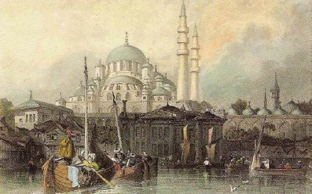

İstanbul’un sembolü olan eserlerden Yeni Camii’nin temelleri Ağustos 1597 tarihinde atıldı. Arazi denize yakın olduğu için gece gündüz, sekiz ay boyunca temellerdeki sular çekildi. Cami inşaatı devam ederken 1603 tarihinde III. Mehmet öldü. Camiyi yaptırmaya karar veren Valide Safiye Sultan gücünü kaybettiği için, caminin yapımına yıllarca ara verildi. Bu ara 1660 yılında caminin yeniden başlayan inşaatı devam ederken oldukça uzun süren, büyük bir yangın çıktı. Hasbahçe’den Unkapanı’na kadar olan yerler yandı. Yangında cami de zarar gördü. Padişah IV. Mehmet’in annesi Valide Turhan Sultan cami etrafında yanan evlerin arsalarını alarak çarşı ve pazar yaptırdı.
Caminin yapımı 1663 yılında tamamlandı. Böylece Sultan Ahmet Camii’nden önce yapımına başlanan eser Sultan Ahmet Camii’nden yıllar sonra tamamlanabildi. Camii Safiye Sultan tarafından yaptırılmaya başlandı. Fakat Valide Turhan Sultan zamanında tamamlandı. Bu nedenle camiye “Valide Sultan Camisi” de denmekteydi. Valide sultanlar tarafından birçok yerde yaptırılan camilerden ayrılması için bu camiye “Yeni Valide Sultan Camisi” denmiştir. Zamanla yalnızca “Yeni Cami” olarak anılmaya başlandı.

Yeni Camii